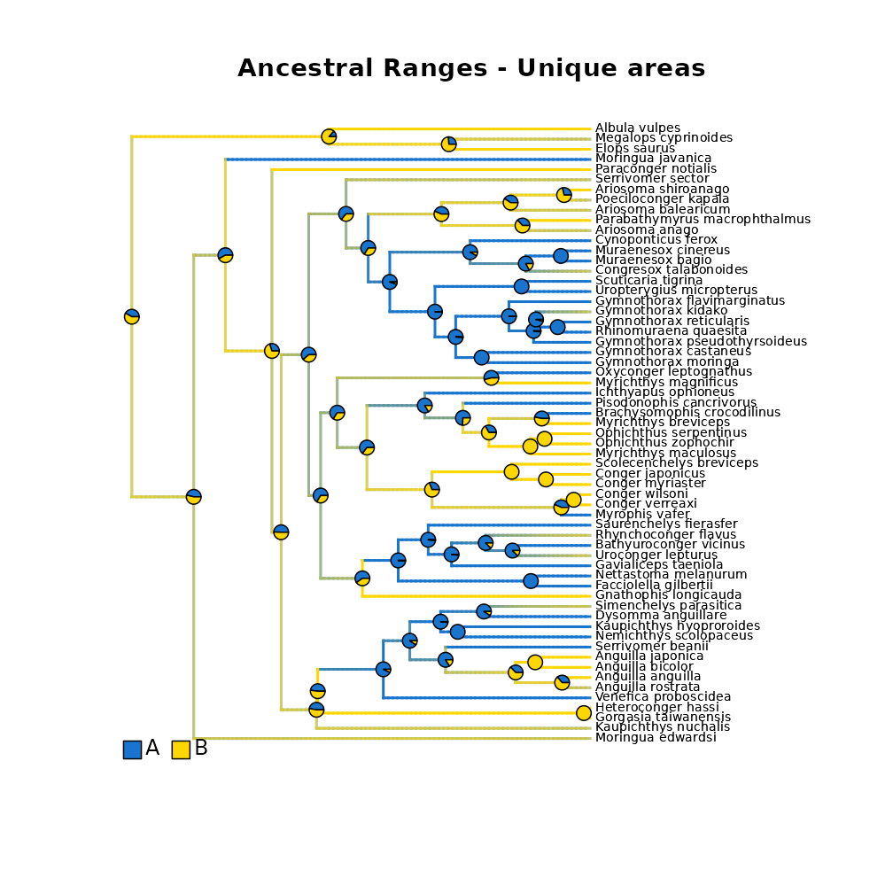
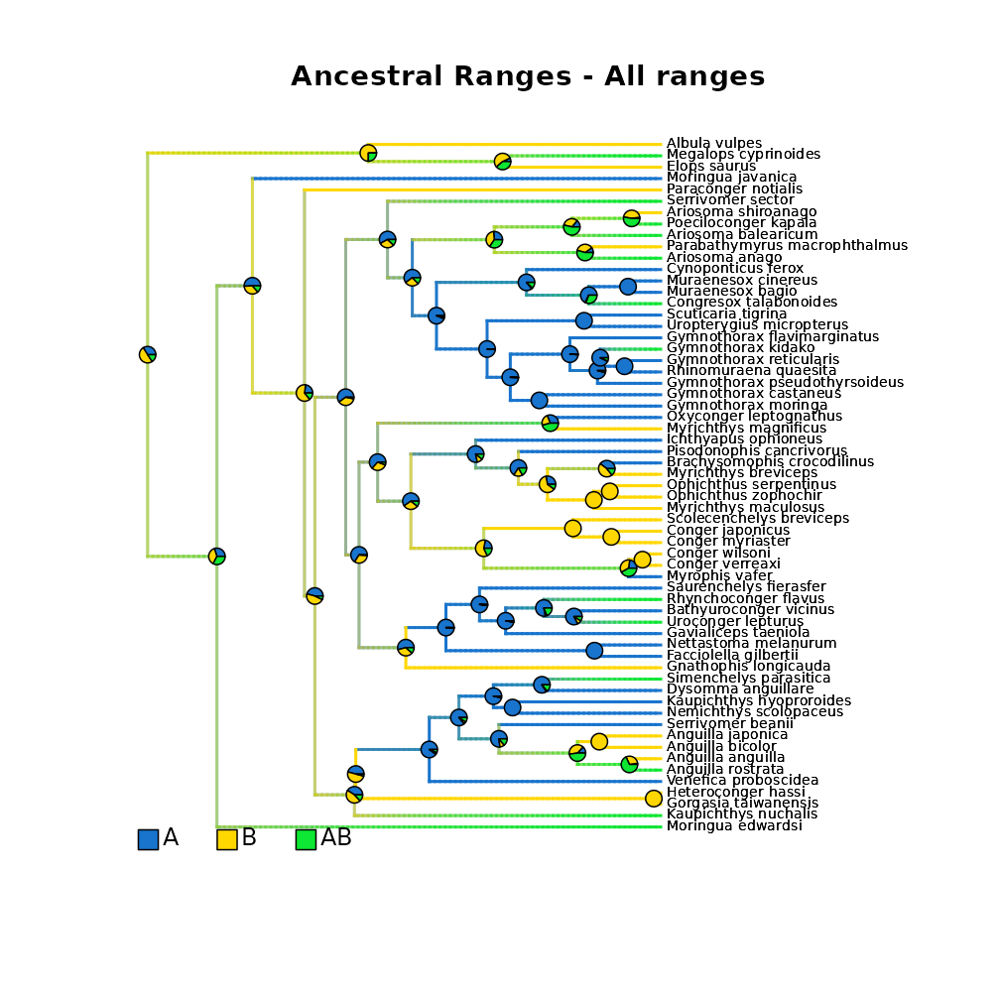
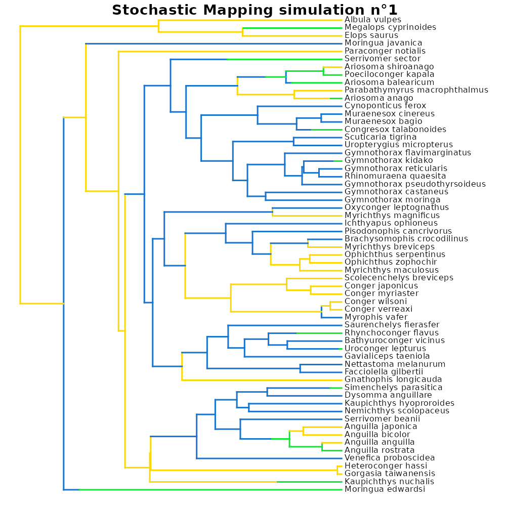
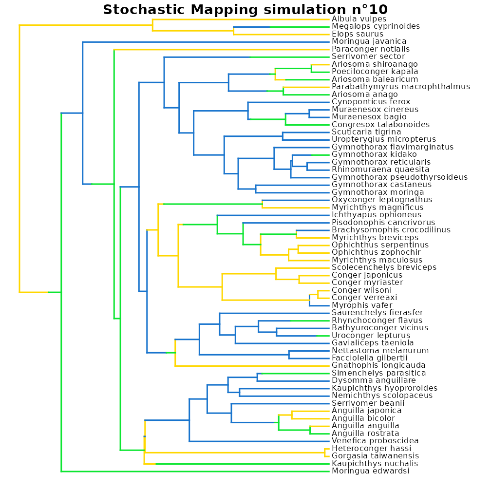

Model biogeographic range evolution
Maël Doré
2025-09-25
Source:vignettes/model_biogeographic_range_evolution.Rmd
model_biogeographic_range_evolution.Rmd
This vignette presents the different options available to model
biogeographic data = range evolution = biogeographic
history within deepSTRAPP.
It builds mainly upon functions from R package
[BioGeoBEARS] to offer a simplify framework to model and
visualize biogeographic range evolution on a
time-calibrated phylogeny.
Please, cite also the initial R package
if you are using deepSTRAPP for this purpose.
For an example with continuous data, see this
vignette: vignette("model_continuous_trait_evolution")
For an example with categorical data, see this
vignette: vignette("model_categorical_trait_evolution")
# ------ Step 0: Load data ------ #
## Load phylogeny and tip data
library(phytools)
data(eel.tree)
data(eel.data)
# Dataset of feeding mode and maximum total length from 61 species of elopomorph eels.
# Source: Collar, D. C., P. C. Wainwright, M. E. Alfaro, L. J. Revell, and R. S. Mehta (2014)
# Biting disrupts integration to spur skull evolution in eels. Nature Communications, 5, 5505.
# Transform feeding mode data into biogeographic data with ranges A, B, and AB.
# This is NOT actual biogeographic data, but data fake generated for the sake of example!
eel_range_tip_data <- stats::setNames(eel.data$feed_mode, rownames(eel.data))
eel_range_tip_data <- as.character(eel_range_tip_data)
eel_range_tip_data[eel_range_tip_data == "bite"] <- "A"
eel_range_tip_data[eel_range_tip_data == "suction"] <- "B"
eel_range_tip_data[c(5, 6, 7, 15, 25, 32, 33, 34, 50, 52, 57, 58, 59)] <- "AB"
eel_range_tip_data <- stats::setNames(eel_range_tip_data, rownames(eel.data))
table(eel_range_tip_data)
# Here, the input date is a vector of character strings with tip.label as names, and range data as values.
# Range coding scheme must follow the coding scheme used in BioGeoBEARS:
# Unique areas must be in CAPITAL letters (e.g., "A", "B")
# Ranges encompassing multiple areas are formed in combining unique area letters
# in alphabetic order (e.g., "AB", "BC", "ABC")
eel_range_tip_data
## Convert into binary presence/absence matrix
# deepSTRAPP also accept biogeographic data as binary presence/absence matrix or data.frame
# Here is the equivalent biogeographic data converted into a valid binary presence/absence matrix
# Extract ranges
all_ranges <- levels(as.factor(eel_range_tip_data))
# Order in number of areas x alphabetic order (i.e., single areas, then 2-area ranges, etc.)
unique_areas <- all_ranges[nchar(all_ranges) == 1]
unique_areas <- unique_areas[order(unique_areas)]
multi_area_ranges <- setdiff(all_ranges, unique_areas)
multi_area_ranges <- multi_area_ranges[order(multi_area_ranges)]
all_ranges_ordered <- c(unique_areas, multi_area_ranges)
# Create template matrix only with unique areas
eel_range_binary_matrix <- matrix(data = 0,
nrow = length(eel_range_tip_data),
ncol = length(unique_areas),
dimnames = list(names(eel_range_tip_data), unique_areas))
# Fill with presence/absence data
for (i in seq_along(eel_range_tip_data))
{
# i <- 1
# Extract range for taxa i
range_i <- eel_range_tip_data[i]
# Decompose range in unique areas
all_unique_areas_in_range_i <- unlist(strsplit(x = range_i, split = ""))
# Record match in eel_range_tip_data vector
eel_range_binary_matrix[i, all_unique_areas_in_range_i] <- 1
}
eel_range_binary_matrix
# Rows are taxa. Columns are unique areas. Values are presence/absence recorded in each area with '0/1'.
# Taxa with multi-area ranges (i.e., encompassing multiple unique areas)
# have multiple '1' in the same row.
## Check that trait tip data and phylogeny are named and ordered similarly
all(names(eel_range_tip_data) == eel.tree$tip.label)
all(row.names(eel_range_binary_matrix) == eel.tree$tip.label)
# Reorder tip_data as in phylogeny
eel_range_tip_data <- eel_range_tip_data[eel.tree$tip.label]
# Reorder eel_range_binary_matrix as in phylogeny
eel_range_binary_matrix <- eel_range_binary_matrix[eel.tree$tip.label, ]
## Set colors per ranges
colors_per_ranges <- c("dodgerblue3", "gold")
names(colors_per_ranges) <- c("A", "B")
# If you provide only colors for unique areas (e.g., "A", "B"), the colors of multi-area ranges
# will be interpolated (e.g., "AB")
# In this example, using types of blue and yellow for range "A" and "B" respectively
# will yield a type of green for multi-area range "AB".
# ------ Step 1: Prepare biogeographic data ------ #
## Goal: Map biogeographic range evolution on the time-calibrated phylogeny
# 1.1/ Fit biogeographic evolutionary models to trait data using Maximum Likelihood.
# 1.2/ Select the best fitting model comparing AICc.
# 1.3/ Infer ancestral characters estimates (ACE) of ranges at nodes.
# 1.4/ Run Biogeographic Stochastic Mapping (BSM) simulations to generate biogeographic histories
# compatible with the best model and inferred ACE.
# 1.5/ Infer ancestral ranges along branches.
# - Compute posterior frequencies of each range to produce a `densityMap` for each range.
library(deepSTRAPP)
# All these actions are performed by a single function: deepSTRAPP::prepare_trait_data()
?deepSTRAPP::prepare_trait_data()
# Model selection is performed internally with deepSTRAPP::select_best_model_from_geiger()
?deepSTRAPP::select_best_model_from_geiger()
# Plotting of all densityMaps as a unique phylogeny is carried out
# with deepSTRAPP::plot_densityMaps_overlay()
?deepSTRAPP::plot_densityMaps_overlay()
## Macroevolutionary models for biogeographic data
# For more in-depth information on the models available see the R package [BioGeoBEARS]
# See the associated website: http://phylo.wikidot.com/biogeobears
## Parameters in BioGeoBEARS
# Biogeographic models are based on a set of biogeographic events defined by a set of parameters
## Anagenetic events = occurring along branches
# d = dispersal rate = anagenetic range extension. Ex: A -> AB
# e = extinction rate = anagenetic range contraction. Ex: AB -> A
## Cladogenetic events = occurring at speciation
# y = Non-transitional speciation relative weight = cladogenetic inheritance.
# Ex: Narrow inheritance: A -> (A),(A); Wide-spread sympatric speciation: AB -> (AB),(AB)
# v = Vicariance relative weight = cladogenetic vicariance.
# Ex: Narrow vicariance: AB -> (A),(B); Wide-vicariance: ABCD -> (AB),(CD)
# s = Subset speciation relative weight = cladogenetic sympatric speciation.
# Ex: AB -> (AB),(A)
# j = Jump-dispersal relative weight = cladogenetic founder-event.
# Ex: A -> (A),(B)
## 6 models from BioGeoBEARS are available
# "BAYAREALIKE": BAYAREALIKE is a likelihood interpretation of the Bayesian implementation
# of BAYAREA model, and it is "like BAYAREA".
# It is the "simpler" model, that allows the least types of biogeographic events to occur.
# Nothing is happening during cladogenesis. Only inheritance of previous range (y = 1).
# Allows narrow and wide-spread sympatric speciation: A -> (A),(A); AB => (AB),(AB)
# No narrow or wide vicariance (v = 0)
# No subset sympatric speciation (s = 0)
# No jump dispersal (j = 0)
# Model has 2 free parameters = d (range extension), e (range contraction).
# "DIVALIKE": DIVALIKE is a likelihood interpretation of parsimony DIVA, and it is "like DIVA".
# Compared to BAYAREALIKE, it allows vicariance events to occur during speciation.
# Allows narrow sympatric speciation (y): A -> (A),(A)
# Does NOT allow wide-spread sympatric speciation.
# Allows and narrow AND wide-spread vicariance (v): AB -> (A),(B); ABCD -> (AB),(CD)
# No subset sympatric speciation (s = 0)
# No jump dispersal (j = 0)
# Relative weights of y and v are fixed to 1.
# Model has 2 free parameters = d (range extension), e (range contraction).
# "DEC": Dispersal-Extinction-Cladogenesis model. This is the default model in deepSTRAPP.
# Compared to BAYAREALIKE, it allows subset speciation (s) to occur,
# but it does not allows wide-spread vicariance.
# Allows narrow sympatric speciation (y): A -> (A),(A)
# Does NOT allow wide-spread sympatric speciation.
# Allows narrow vicariance (v): AB -> (A),(B)
# Does NOT allow wide-spread vicariance.
# Allows subset sympatric speciation: AB -> (AB),(A)
# No jump dispersal (j = 0)
# Relative weights of y, v, and s are fixed to 1.
# Model has 2 free parameters = d (range extension), e (range contraction).
# "...+J": All previous models can add jump-dispersal events with the parameter j.
# Allows jump-dispersal events to occur at speciation: A -> (A),(B)
# Depicts cladogenetic founder events where a small population disperse to a new area .
# Isolation results in speciation of the two populations in distinct lineages
# occurring in two different areas.
# Relative weights of y,v,s are fixed to 1-j ("BAYAREALIKE+J"), 2-j ("DIVALIKE+J"), or 3-j ("DEC+J").
# Models have only 3 free parameters = d (range extension), e (range contraction),
# and j (jump dispersal).
## Model trait data evolution
eel_biogeo_data <- prepare_trait_data(
tip_data = eel_range_tip_data,
# Alternative input using the binary presence/absence range matrix
# tip_data = eel_range_binary_matrix,
trait_data_type = "biogeographic",
phylo = eel.tree,
seed = 1234, # Set seed for reproducibility
# All models available
evolutionary_models = c("BAYAREALIKE", "DIVALIKE", "DEC", "BAYAREALIKE+J", "DIVALIKE+J", "DEC+J"),
# To provide link to the directory folder where the outputs of BioGeoBEARS will be saved
BioGeoBEARS_directory_path = "./BioGeoBEARS_directory/",
# Whether to save BioGeoBEARS intermediate files, or remove them after the run
keep_BioGeoBEARS_files = TRUE,
prefix_for_files = "eel", # Prefixe used to save BioGeoBEARS intermediate files
# To set the number of core to use for computation.
# Parallelization over multiple cores may speed up the process.
nb_cores = 1,
# To define the maximum number of unique areas in ranges. Ex: "AB" = 2; "ABC" = 3.
max_range_size = 2,
split_multi_area_ranges = TRUE, # Set to TRUE to display the two outputs
res = 100, # To set the resolution of the continuous mapping of ranges on the densityMaps
colors_per_levels = colors_per_ranges,
# Reduce the number of Stochastic Mapping simulations to save time (Default = '1000')
nb_simulations = 100,
# Plot the densityMaps with plot_densityMaps_overlay() to show all ranges at once.
plot_overlay = TRUE,
# PDF_file_path = "./eel_biogeo_evolution_mapped_on_phylo.pdf",
# To include Ancestral Character Estimates (ACE) of ranges at nodes in the output
return_ace = TRUE,
# To include the lists of cladogenetic and anagenetic events produced with BioGeoBEARS::runBSM()
return_BSM = FALSE,
# To include the Biogeographic Stochastic Mapping simulations (simmaps) in the output
return_simmaps = TRUE,
# To include the best model fit in the output
return_best_model_fit = TRUE,
# To include the df for model selection in the output
return_model_selection_df = TRUE,
verbose = TRUE) # To display progress
# ------ Step 2: Explore output ------ #
## Explore output
str(eel_biogeo_data, 1)
## Extract the densityMaps showing posterior probabilities of ranges on the phylogeny
## as estimated from the model
eel_densityMaps <- eel_biogeo_data$densityMaps
# Because we selected 'split_multi_area_ranges = TRUE',
# those densityMaps only record posterior probability of presence in the two unique areas "A" and "B".
# Probability of presences in multi-area range "AB" have been equally split between "A" and "B".
# This is useful when you wish to test for differences in rates
# between unique areas only (e.g., "A" and "B").
# densityMaps including all ranges are also available in the output
eel_densityMaps_all_ranges <- eel_biogeo_data$densityMaps_all_ranges
# If you wish to test for differences across all types of ranges (e.g., "A", "B", and "AB"),
# you need to use these densityMaps, or set 'split_multi_area_ranges = FALSE'
# such as no split of multi-area ranges is performed, and the densityMaps contains all ranges by default.
## Plot densityMap for each range
# Grey represents absence of the range. Color represents presence of the range.
plot(eel_densityMaps_all_ranges[[1]]) # densityMap for range n°1 ("A")
plot(eel_densityMaps_all_ranges[[2]]) # densityMap for range n°2 ("B")
plot(eel_densityMaps_all_ranges[[3]]) # densityMap for range n°3 ("AB")
## Plot all densityMaps overlaid in on a single phylogeny
# Each color highlights presence of its associated range.
# Plot densityMaps considering only unique areas
plot_densityMaps_overlay(eel_densityMaps)
# Plot densityMaps with all ranges, including multi-area ranges
plot_densityMaps_overlay(eel_densityMaps_all_ranges)
# The densityMaps are the main input needed to perform a deepSTRAPP run on categorical trait data.
## Extract the Ancestral Character Estimates (ACE) = trait values at nodes
# Only with unique areas
eel_ACE <- eel_biogeo_data$ace
head(eel_ACE)
# Including multi-area ranges (Here, "AB")
eel_ACE_all_ranges <- eel_biogeo_data$ace_all_ranges
head(eel_ACE_all_ranges)
# This is a matrix of numerical values with row.names = internal node ID,
# colnames = ancestral ranges and values = posterior probability.
# It can be used as an optional input in deepSTRAPP run to provide
# perfectly accurate estimates for ancestral ranges at internal nodes.
## Explore summary of model selection
eel_biogeo_data$model_selection_df # Summary of model selection
# Models are compared using the corrected Akaike's Information Criterion (AICc)
# Akaike's weights represent the probability that a given model is the best
# among the set of candidate models, given the data.
# Here, the best model is the "DEC+J" model
## Explore best model fit (DEC+J model)
# Summary of best model optimization by BioGeoBEARS::bears_optim_run()
str(eel_biogeo_data$best_model_fit, 1)
# Parameter estimates and likelihood optimization information
eel_biogeo_data$best_model_fit$optim_result
# p1 = d = dispersal rate = anagenetic range extension. Ex: A -> AB
# p2 = e = extinction rate = anagenetic range contraction. Ex: AB -> A
# p3 = j = jump-dispersal relative weight = cladogenetic founder-event. Ex: A -> (A),(B)
## Explore Biogeographic Stochastic Mapping outputs from BioGeoBEARS::runBSM()
# Since we selected 'return_BSM = TRUE', lists of cladogenetic and anagenetic events produced
# with BioGeoBEARS::runBSM() are included in the output
?BioGeoBEARS::runBSM()
# This element contains two lists of data.frames summarizing cladogenetic
# and anagenetic events occurring all BSM simulations.
# Each simulation yields a data.frame for each list.
str(eel_biogeo_data$BSM_output, 1)
# Example: Cladogenetic event summary for simulation n°1
head(eel_biogeo_data$BSM_output$RES_clado_events_tables[[1]])
# Example: Anagenetic event summary for simulation n°1
head(eel_biogeo_data$BSM_output$RES_ana_events_tables[[1]])
## Explore simmaps
# Since we selected 'return_simmaps = TRUE',
# Stochastic Mapping simulations (simmaps) are included in the output
# Each simmap represents a simulated evolutionary history with final ranges
# compatible with the tip_data and estimated ACE at nodes.
# Each simmap also follows the transition parameters of the best fit model
# to simulate transitions along branches.
# Update color_per_ranges to include the color interpolated for range "AB"
AB_color_gradient <- eel_densityMaps_all_ranges$Density_map_AB$cols
AB_color <- AB_color_gradient[length(AB_color_gradient)]
colors_per_all_ranges <- c(colors_per_ranges, AB_color)
names(colors_per_all_ranges) <- c("A", "B", "AB")
# Plot simmap n°1 using the same color scheme as in densityMaps
plot(eel_biogeo_data$simmaps[[1]], colors = colors_per_all_ranges, fsize = 0.7)
# Plot simmap n°10 using the same color scheme as in densityMaps
plot(eel_biogeo_data$simmaps[[10]], colors = colors_per_all_ranges, fsize = 0.7)
# Plot simmap n°100 using the same color scheme as in densityMaps
plot(eel_biogeo_data$simmaps[[100]], colors = colors_per_all_ranges, fsize = 0.7)
## Inputs needed to run deepSTRAPP are the densityMaps (eel_densityMaps),
## and optionally, the tip_data (eel_tip_data), and the ACE (eel_ACE)

#> model logLk k AIC AICc delta_AICc
#> BAYAREALIKE BAYAREALIKE -80.93972 2 165.8794 165.9484 40.467618
#> DIVALIKE DIVALIKE -63.80815 2 131.6163 131.6853 6.204488
#> DEC DEC -63.83295 2 131.6659 131.7349 6.254083
#> BAYAREALIKE+J BAYAREALIKE+J -66.46193 3 138.9239 139.1344 13.653595
#> DIVALIKE+J DIVALIKE+J -60.28105 3 126.5621 126.7726 1.291847
#> DEC+J DEC+J -59.63513 3 125.2703 125.4808 0.000000
#> Akaike_weights rank
#> BAYAREALIKE 0.0 6
#> DIVALIKE 2.8 3
#> DEC 2.7 4
#> BAYAREALIKE+J 0.1 5
#> DIVALIKE+J 32.5 2
#> DEC+J 62.0 1
